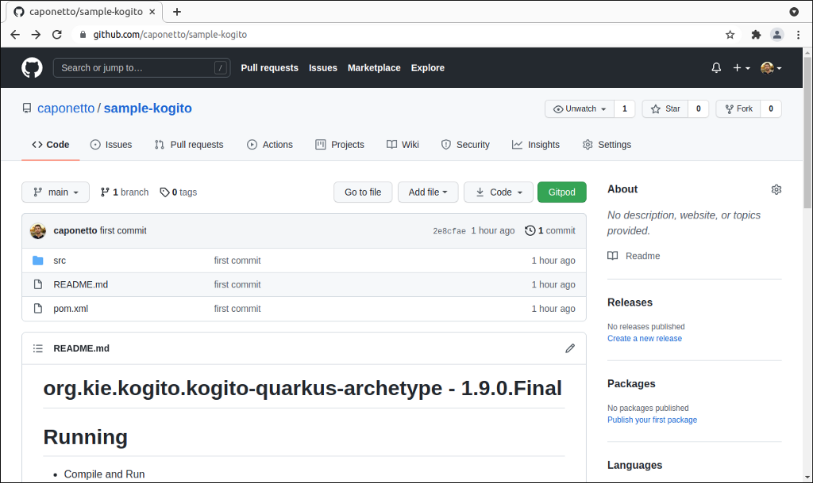
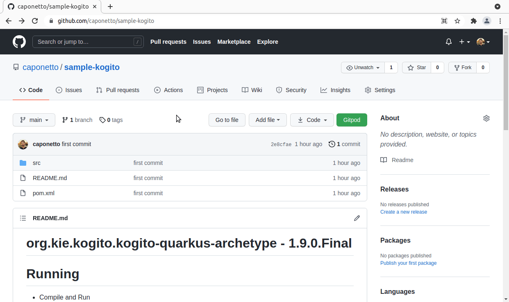
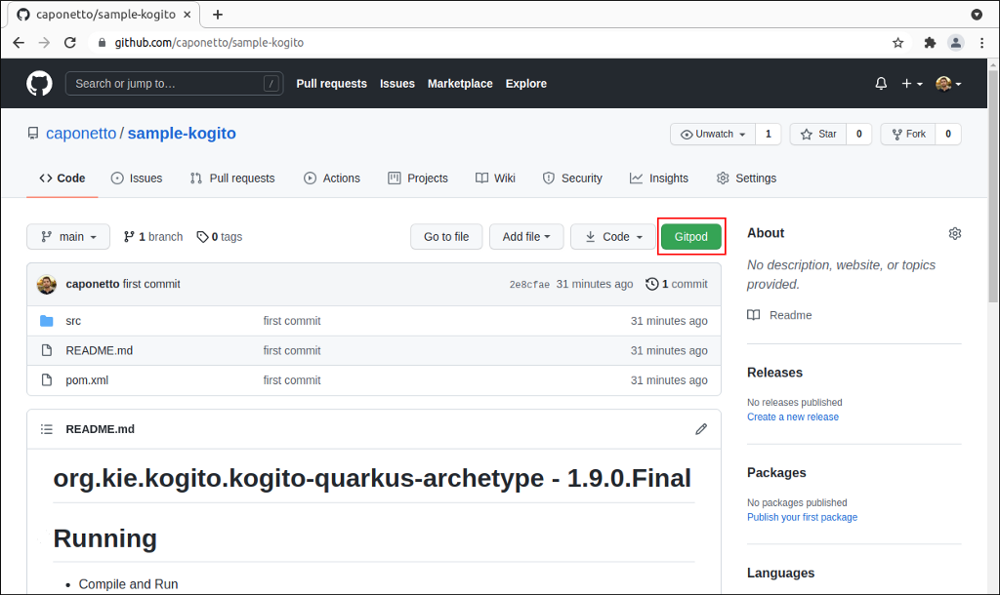
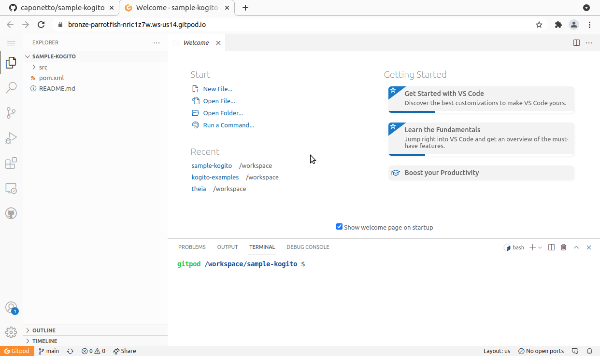
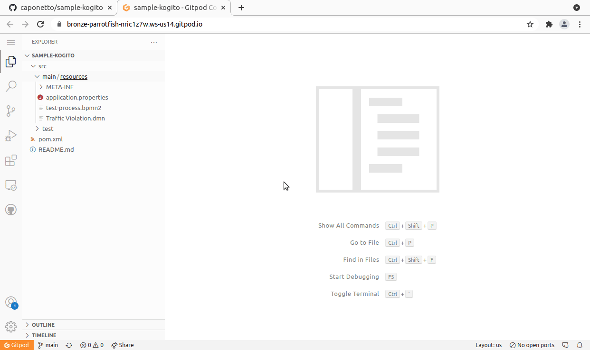
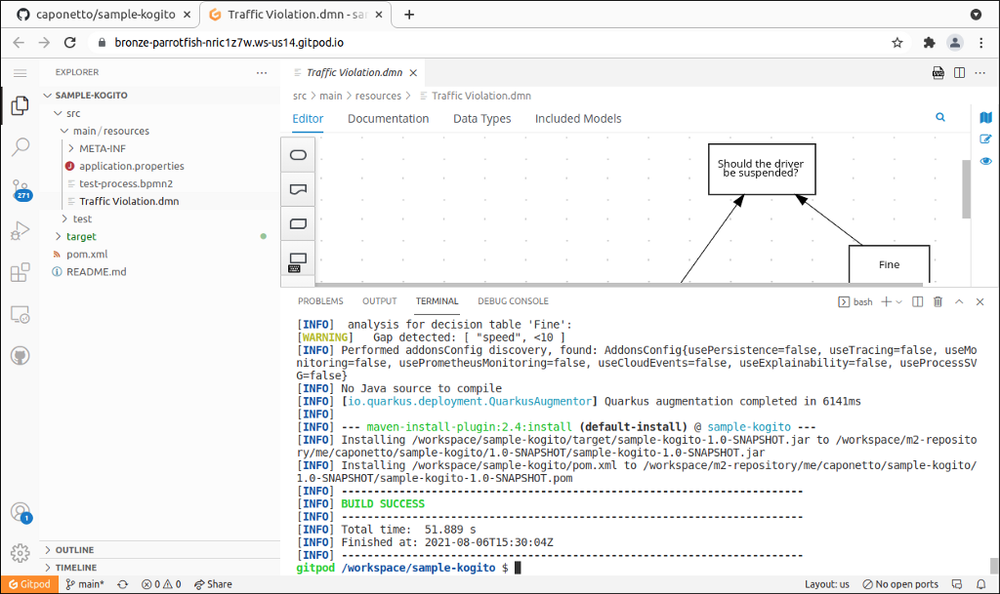
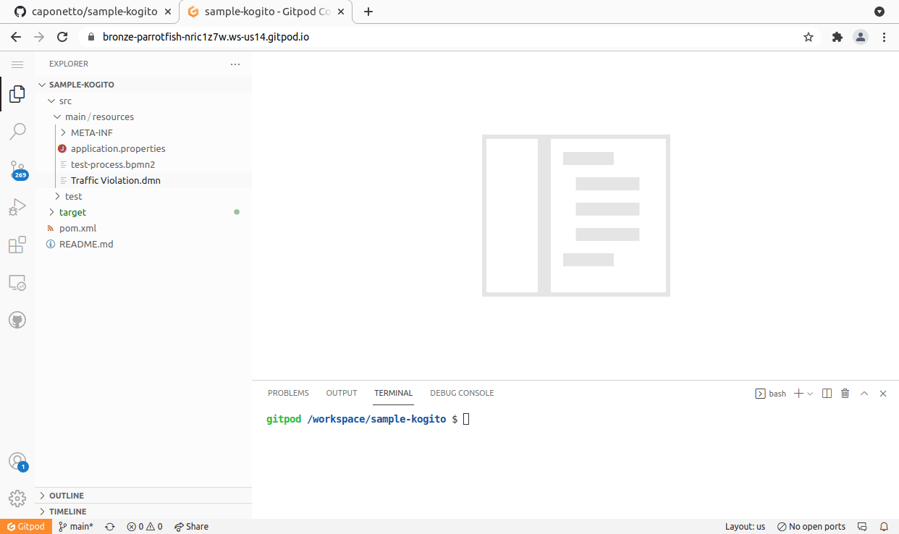

Four steps to author BPMN and DMN assets on gitpod.io
In early 2021, eclipse-theia, an open, flexible, and extensible cloud & desktop IDE platform, integrated support of VS Code custom editors API. It means that users would be able to run our extensions on this platform as well.
Since then, we have been looking forward to seeing this feature enabled in gitpod.io. For those not familiar with gitpod.io, it basically provides a fully online development environment for you to work in your code on top of eclipse-theia. Learn more here about Gitpod and here about all its features.
Online development environments are a recent trend in the industry and can potentially be a game-changer for developers. And you can leverage that to develop your Business Automation assets. Check out how to do that!

1-) Access your code
The first step is to go to your repository. Gitpod supports GitHub, GitLab and BitBucket. It gives you the flexibility to host your project wherever you want.
In this post, I’ll be using github.com/caponetto/sample-kogito, which contains a maven project created from the Kogito Archetype.

2-) Start gitpod.io
The second step is to add gitpod.io/# as prefix to your repository URL and simply open it.
In my case, I’m accessing gitpod.io/#https://github.com/caponetto/sample-kogito.
The first time you access Gitpod, you’ll be asked to log in with GitHub, GitLab, or BitBucket. After doing so, Gitpod will automatically create a workspace for you and open your repository in the IDE.

You can also install the Gitpod Chrome extension which will basically do Step 2 for you with a click of a button. Once you install the extension, the button will be available in your repository.

3-) Install Red Hat Business Automation Bundle
The third step is to install our extensions as you would normally do on VS Code. To do so, go to the Extensions menu in your newly created workspace and search for “Red Hat Business Automation Bundle”. This will automatically install our BPMN and DMN extensions.

4-) Visualize and author your BPMN and DMN assets
Now you are ready to visualize and author your BPMN and DMN assets!

Bonus
You can also leverage the workspace capabilities by triggering a build of your project in order to be confident that new changes are correct. To do so, simply use the provided terminal as you would use in VS Code.
Since my repository has a maven project, I can run mvn clean install, which builds the project and runs the tests.

I can also start up Quarkus in development mode. To do so, I can run mvn clean package quarkus:dev -DskipTests on the terminal. Then, I can access the SwaggerUI to test my model. Remember, I didn’t install anything on my machine as all those things are in the cloud! Awesome, am I right?

You can even set the service to be publicly available and share the SwaggerUI URL for others to try!
And that’s all for today. Thanks for reading! 😃